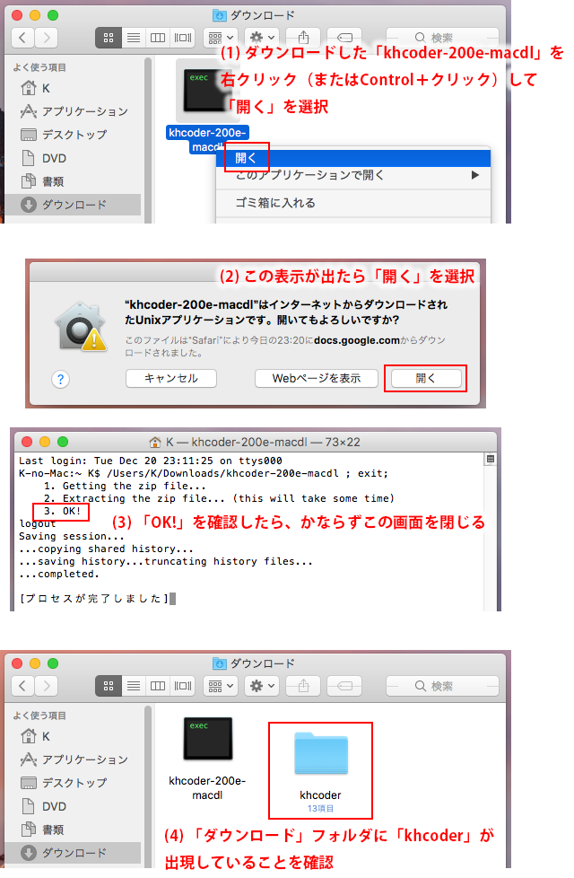
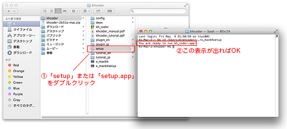
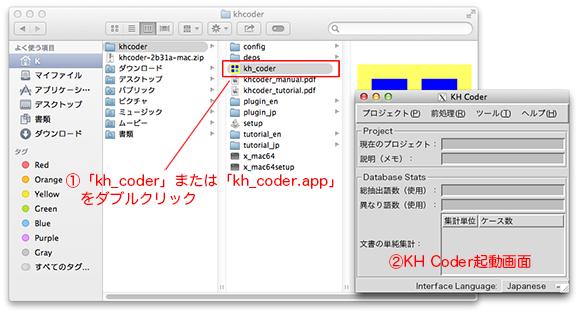

■必須ソフトウェアのインストール
- 「XQuartz」をこちらからダウンロード・インストールしてください。
- 現在は「XQuartz-2.7.11.dmg」を利用すると良いでしょう。
- インストールしたら一度Macを再起動してください。
- 「MacUIM」をこちらからダウンロード・インストールしてください。
- 現在は「MacUIM-0.6.16-1.dmg」を利用すると良いでしょう。
- インストールしたら一度Macを再起動してください。
※もし英語データを分析する場合には、さらにJDK（Java SE Development Kit）をダウンロード・インストールしてください。
■ Zipファイルの展開とコピー
1. 購入していただいたファイルを開くと、「ダウンロード」フォルダ内に「khcoder」というフォルダが出現します。ここでターミナル画面が1つ開きますが、次の手順に進む前にこの画面は閉じておいてください。

(クリックで拡大)
2. 移動したい場合は、この「khcoder」フォルダを、KH Coderを置く場所に移動してください。ホームフォルダ内で、日本語のフォルダ名がついていない場所としてください。 またスペースを含むフォルダ名も避けてください。
※必ず「khcoder」フォルダをまるごと移動してください。フォルダ内から、黄色と青のアイコンの「kh_coder」だけを取り出すと、KH Coderは動作しなくなります。
■ 自動設定ソフトウェアの実行

(クリックで拡大)
■ KH Coderの起動

（クリックで拡大）
ここから先の操作・分析については、チュートリアルの7ページ目以降をご覧ください。もしもKH Coderが上手く動かない場合には、下記の仕様や、よくある質問ページをご覧ください。
※1 ここまで実施した後は、「khcoder」フォルダの場所を移動しないようにしてください。もし移動した場合は再度「setup」をダブルクリックしてください。 アンインストールしたいときには、「khcoder」フォルダを削除してください。
※2 有償でご提供しているのは自動設定ソフトウェアのみですが、利用者の皆様に便利なよう、Zipファイル内にはKH CoderのMac版バイナリ等、必要ソフトウェア一式を同梱しています。
Mac版KH Coderの仕様
自動設定ソフトウェアの問題ではなく、KH Coder本体の現在の仕様として、以下のような点があります。あらかじめご了承ください。
- 「ことえり」をつかってKH Coderに日本語を入力することはできません。KH Coderに日本語を入力する際は「Shift + Space」キーを押してください。（全角英数字を入力したいときは「Shift + F9」を、ひらがな入力に戻すには「Shift + F6」を押してください）
- 同梱している茶筌のバージョンが異なるため、わずかではありますが、Windows版パッケージとは分析結果に違いがあります。
- KH Coderのソースコードを起動してみたけれど、こちらのスレッドのような相性問題が生じているという場合、それはKH Coder本体の問題と思われます。そのため自動設定ソフトウェアをご使用いただいても改善しない見込みが大きいと思いますので、ご購入はお勧めいたしません。
ご購入方法と使用条件
「KH Coderサポートストア」よりご購入ください。
ご購入前に以下の使用条件をご確認ください：
- この自動設定ソフトウェアは、フリーソフトウェアではありません。再配布等は一切ご遠慮ください。
- この自動設定ソフトウェアは、利用するコンピュータの台数分お買い求めください。※ただし、1台のMacから自動設定ソフトウェアおよび自動設定したKH Coderを完全に削除した場合には、当該製品を別の1台のMacで使用することができます。
- この自動設定ソフトウェアを用いたことによって生じるいかなる直接的損害・間接的損害についても、筆者はその責を負いません。
- 自動設定ソフトウェア（setup/setup.app）の実行時にエラーが表示されたり、KH Coderの起動画面が出なかったり、前処理に失敗したりする場合には、ご購入後2週間以内であれば返品・返金の申し出に対応させていただきます。
- お申し出の際には、状況の把握と今後の改善のために、どのようなエラーが表示されたかなどを、なるべく詳しくお知らせください。ターミナルの表示内容もすべてコピー＆ペーストしてお知らせください。十分に詳しいご説明をいただけない場合、こちらから問い合わせをさせていただく場合があります。また、こちらからの問い合わせにもご対応いただけない場合、返金手続きを開始できない場合があります。
- 通常の場合、返金手続き開始後、3ヶ月以内に返金が実施されます。
- カード決済あるいはその他の決済手数料として差し引かれている額については返金することができません。
- 自動設定ソフトウェアが正常に動作してKH Coderが起動しており（すなわちKH Coderの起動画面が表示されており）、前処理も成功する場合には、KH Coder本体の問題を理由としての返品・返金には応じかねます。

{kind=link}
{kind=link}
{kind=link}
{kind=link}